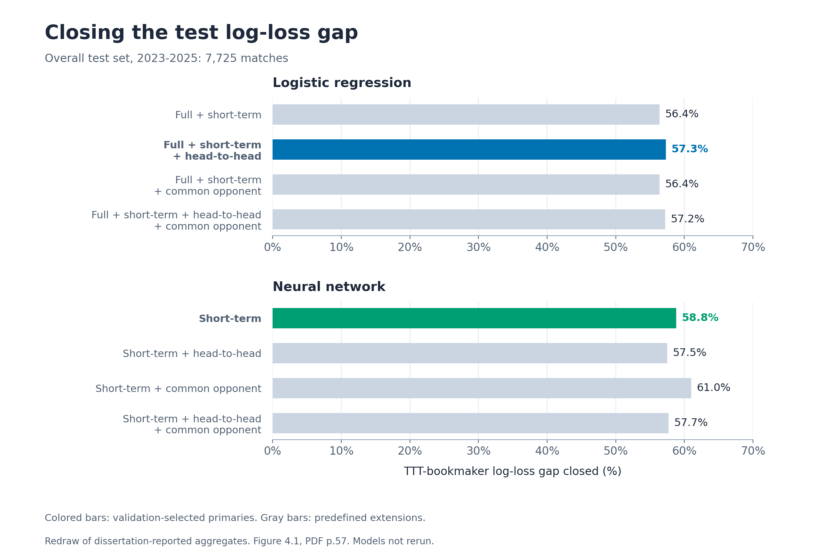

01 MSc dissertation 2010–2025
ATP Tennis Forecasting
This study asks whether pre-match ranking, form, surface, workload and matchup history can narrow the gap between TrueSkill Through Time (TTT) forecasts and bookmaker probabilities. It uses chronological model selection and daily rolling-origin testing.
On the 7,725-match test set, the primary logistic and neural-network models closed 57.3% and 58.8% of the TTT–bookmaker log-loss gap. The bookmaker remained the strongest benchmark: its reported test log loss was 0.5866, compared with 0.6169 and 0.6159 for the two primary models.
Evidence status: dissertation-reported results. The figures redraw checked aggregates; the statistical pipeline was not independently rerun for this portfolio.

